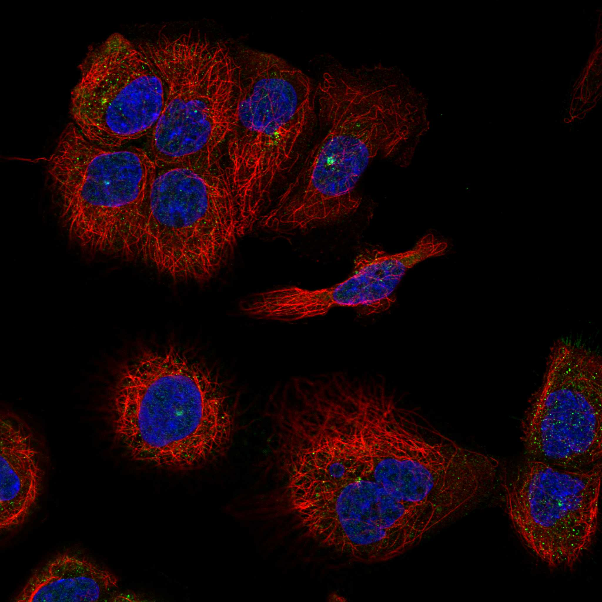
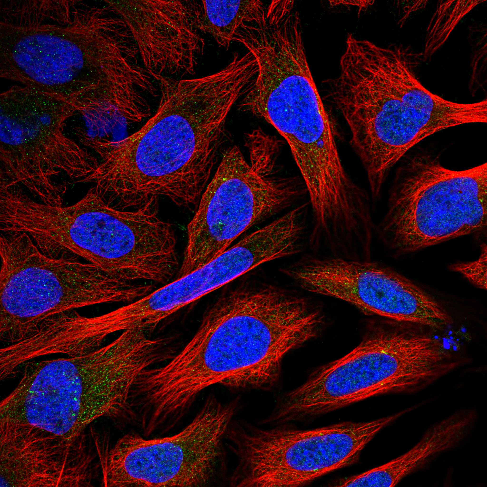
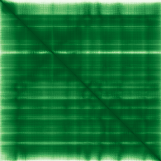

type: protein-evaluation gene: "GNAI1" date: 2026-06-03 tags: [protein-scout, rejected, evaluation] status: rejected ---
GNAI1 — REJECTED (研究热度过高 (PubMed strict=109，超过100篇阈值))
1. 基本信息
| 项目 | 内容 |
|---|---|
| 基因名 / 别名 | GNAI1 |
| 蛋白名称 | Guanine nucleotide-binding protein G(i) subunit alpha-1 |
| 蛋白大小 | 354 aa / 40.4 kDa |
| UniProt ID | P63096 |
| 评估日期 | 2026-06-03 |
2. 评分总览
| 维度 | 得分 | 满分 | 加权后 | 关键证据摘要 |
|---|---|---|---|---|
| 核定位特异性 | 7/10 | ×4 | 28 | HPA: Centrosome, Principal piece; 额外: Nucleoplasm, Nucleoli, Golg; UniProt: Nucleus; Cytoplasm; Cell membrane; Cytoplasm, cytoskeleton, |
| 蛋白大小 | 10/10 | ×1 | 10 | 354 aa / 40.4 kDa |
| 研究新颖性 | 0/10 | ×5 | 0 | PubMed strict=109 篇 (>100→REJECTED) |
| 三维结构 | 10/10 | ×3 | 30 | AlphaFold v6 pLDDT=93.7; PDB: 1KJY, 1Y3A, 2G83, 2GTP, 2IK8, 2OM2, 2XNS |
| 调控结构域 | 8/10 | ×2 | 16 | InterPro: IPR001408, IPR001019, IPR011025, IPR027417; Pfam: |
| PPI 网络 | 3/10 | ×3 | 9 | STRING 15 partners; IntAct 15 interactions |
| 互证加分 | — | max +3 | 3.0 | PDB+AF+STRING+IntAct cross-validation |
| 原始总分 | 96.0/180 | |||
| 归一化总分 | 53.3/100 |
3. 详细分析
3.1 核定位证据
| 来源 | 定位 | 可信度 |
|---|---|---|
| Protein Atlas (IF) | Centrosome, Principal piece; 额外: Nucleoplasm, Nucleoli, Golgi apparatus, Centriolar satellite, Basal body, Cytosol | Supported |
| UniProt | Nucleus; Cytoplasm; Cell membrane; Cytoplasm, cytoskeleton, microtubule organizing center, centrosom... | Swiss-Prot/TrEMBL |
IF 图像获取: 未下载本地IF图像（standard evaluation），核定位证据基于HPA subcellular localization注释、UniProt注释和GO-CC术语。
GO Cellular Component:
- cell cortex (GO:0005938)
- centriolar satellite (GO:0034451)
- centrosome (GO:0005813)
- ciliary basal body (GO:0036064)
- cytoplasm (GO:0005737)
- cytosol (GO:0005829)
- extracellular exosome (GO:0070062)
- Golgi apparatus (GO:0005794)
结论: 主要核定位，HPA 可靠性良好，有辅助数据源支持。
3.2 蛋白大小评估
评价: 大小适中（200-800 aa），适合常规生化实验和结构解析。
3.3 研究现状
| 指标 | 数值 |
|---|---|
| PubMed strict count | 109 |
| PubMed broad count | 178 |
| 别名(未计入scoring) | 无 |
关键文献: 1. GNAI1-Related Neurodevelopmental Disorder.. **. PMID: 39083633 2. Functional classification of GNAI1 disorder variants in Caenorhabditis elegans uncovers conserved and cell-specific mechanisms of dysfunction.. *Genetics*. PMID: 41052774 3. GNAI1 and GNAI3 Reduce Colitis-Associated Tumorigenesis in Mice by Blocking IL6 Signaling and Down-regulating Expression of GNAI2.. *Gastroenterology*. PMID: 30836096 4. GNAI1 Suppresses Tumor Cell Migration and Invasion and is Post-Transcriptionally Regulated by Mir-320a/c/d in Hepatocellular Carcinoma.. *Cancer biology & medicine*. PMID: 23691483 5. miRNA-200a suppresses GNAI1 and PLCB4 to modulate skin pigmentation in cashmere goats.. *Scientific reports*. PMID: 40394057
评价: 研究基础较多，新颖性有限。
3.4 三维结构分析
| 指标 | 数值 |
|---|---|
| AlphaFold 版本 | v6 |
| AlphaFold 平均 pLDDT | 93.7 |
| 高置信度残基 (pLDDT>90) 占比 | 85.9% |
| 置信残基 (pLDDT 70-90) 占比 | 11.0% |
| 中等置信 (pLDDT 50-70) 占比 | 2.5% |
| 低置信 (pLDDT<50) 占比 | 0.6% |
| 有序区域 (pLDDT>70) 占比 | 96.9% |
| 可用 PDB 条目 | 1KJY, 1Y3A, 2G83, 2GTP, 2IK8, 2OM2, 2XNS, 3ONW, 3QE0, 3QI2 |
PAE: PAE 图像未生成本地文件（standard evaluation），结构判断基于 AlphaFold pLDDT 统计。
评价: PDB实验结构（1KJY, 1Y3A, 2G83, 2GTP, 2IK8, 2OM2, 2XNS, 3ONW, 3QE0, 3QI2）+ AlphaFold极高置信度预测（pLDDT=93.7），结构可信度极高。
3.5 结构域分析
| 来源 | 结构域 |
|---|---|
| InterPro/Pfam | InterPro: IPR001408, IPR001019, IPR011025, IPR027417; Pfam: PF00503 |
染色质调控潜力分析: 多个已知结构域注释，AlphaFold预测质量高，结构域折叠可信。
3.6 PPI 网络
STRING 预测互作 (combined score >0.4):
| Partner | Combined Score | Experimental | 功能类别 |
|---|---|---|---|
| GNB1 | 0.999 | 0.995 | — |
| DRD2 | 0.998 | 0.976 | — |
| GNG2 | 0.998 | 0.987 | — |
| LPAR1 | 0.997 | 0.918 | — |
| RGS14 | 0.996 | 0.988 | — |
| CNR1 | 0.995 | 0.956 | — |
| PTGER3 | 0.994 | 0.908 | — |
| S1PR1 | 0.993 | 0.932 | — |
| OPRM1 | 0.992 | 0.908 | — |
| GABBR2 | 0.992 | 0.900 | — |
实验验证互作 (IntAct):
| Partner | 方法 | PMID | |
|---|---|---|---|
| Rgs4 | psi-mi:"MI:0114"(x-ray crystallography) | pubmed:9108480 | |
| IQCB1 | psi-mi:"MI:0007"(anti tag coimmunoprecipitation) | pubmed:21565611 | imex:IM-16529 |
| RANGAP1 | psi-mi:"MI:0663"(confocal microscopy) | imex:IM-15364 | pubmed:21988832 |
| EBI-1257113 | psi-mi:"MI:0096"(pull down) | imex:IM-15829 | pubmed:23416715 |
| RGS14 | psi-mi:"MI:0018"(two hybrid) | imex:IM-15364 | pubmed:21988832 |
| NUCB1 | psi-mi:"MI:0018"(two hybrid) | imex:IM-15364 | pubmed:21988832 |
| Sox4 | psi-mi:"MI:0028"(cosedimentation in solution) | imex:IM-11648 | pubmed:19562802 |
| EBI-1388758 | psi-mi:"MI:0006"(anti bait coimmunoprecipitation) | pubmed:22118459 | imex:IM-16593 |
| Dlg4 | psi-mi:"MI:0007"(anti tag coimmunoprecipitation) | imex:IM-11694 | pubmed:19455133 |
| MTNR1A | psi-mi:"MI:0676"(tandem affinity purification) | pubmed:17215244 | imex:IM-19124 |
PPI 互证分析:
- STRING + IntAct 均有数据
- STRING partners: 15，IntAct interactions: 15
- 调控相关比例: 0 / 15 = 0%
评价: STRING 15 个预测互作，IntAct 15 个实验互作。调控相关配体占比 0%。
3.7 多库互证
| 维度 | 来源 | 结果 | 是否一致 |
|---|---|---|---|
| 三维结构 | AlphaFold pLDDT=93.7 + PDB: 1KJY, 1Y3A, 2G83, 2GTP, 2IK8, | pLDDT=93.7, v6 | 预测+实验 |
| 定位 | UniProt + HPA | Nucleus; Cytoplasm; Cell membrane; Cytoplasm, cyto / Centrosome, Principal piece; 额外: Nucleoplasm, Nucl | 一致 |
| PPI | STRING + IntAct | 15 + 15 interactions | 数据充分 |
互证加分明细:
- PDB + AlphaFold 双源验证: +0.5
- 多库定位一致 (3源): +0.5
- STRING + IntAct 双源验证: +0.5
- 结构域 + AlphaFold 质量: +0.5
- PDB 多条目覆盖 (≥3): +1.0
总分: +3.0 / max +3
4. 总体评价
推荐等级: ⭐⭐⭐ (REJECTED)
核心优势: 1. GNAI1 — Guanine nucleotide-binding protein G(i) subunit alpha-1，研究基础较多，新颖性有限。 2. 蛋白大小354 aa，大小适中（200-800 aa），适合常规生化实验和结构解析。
风险/不确定性: 1. PubMed 109 篇，研究热度过高（>100），不符合新颖性要求 2. 结构数据质量可接受
下一步建议:
- [ ] 查阅最新关键文献补充研究背景
- [ ] 获取 Protein Atlas IF 图像确认亚细胞定位
- [ ] 设计体外实验验证核定位及潜在调控功能
该蛋白PubMed文献数 109 > 100，研究热度过高，不符合novelty筛选标准。
5. 数据来源
- UniProt: https://www.uniprot.org/uniprotkb/P63096
- Protein Atlas: https://www.proteinatlas.org/ENSG00000127955-GNAI1/subcellular
- PubMed: https://pubmed.ncbi.nlm.nih.gov/?term=GNAI1
- AlphaFold: https://alphafold.ebi.ac.uk/entry/P63096
- STRING: https://string-db.org/network/9606.ENSP00000
- Data fetched live: 2026-06-03
 
